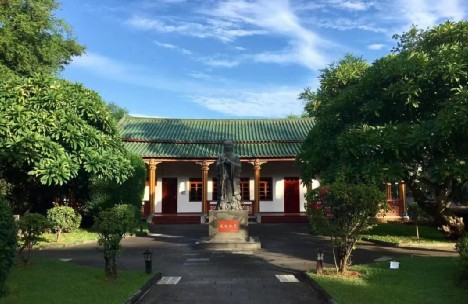
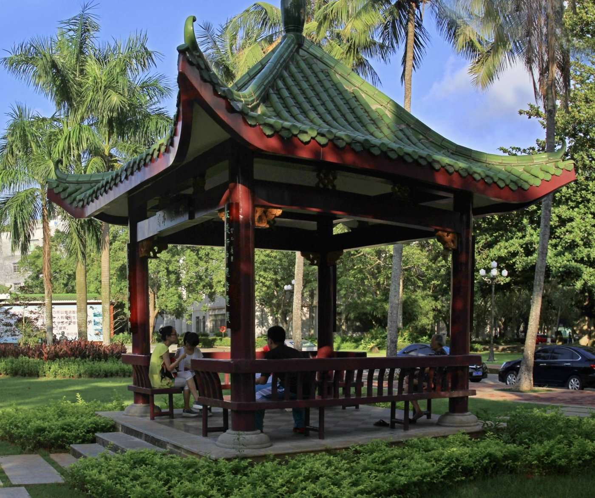
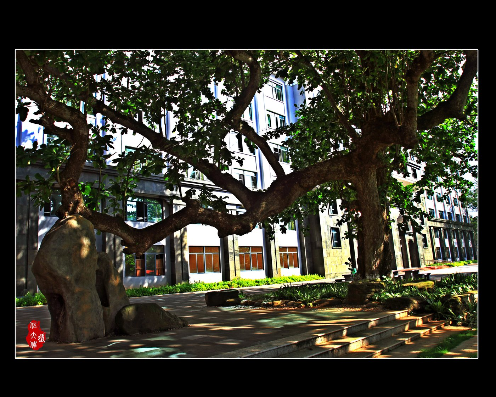
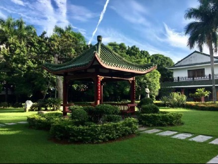
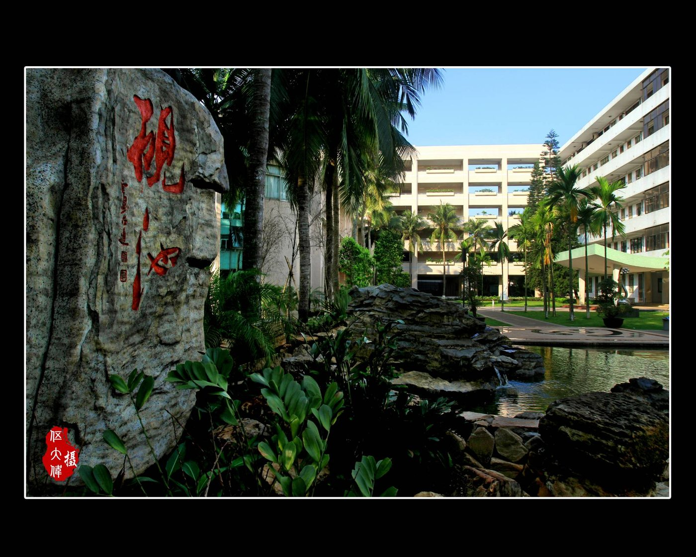
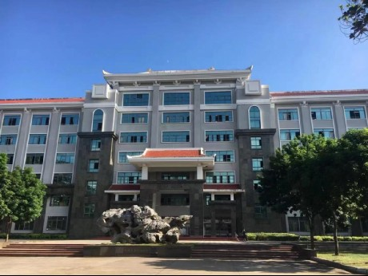

历史建筑
凤栖堂 · FENGQI HALL
府城校区最具历史感的建筑之一：绿瓦、朱柱与完整院落，是校园的视觉中心。
一所学校与一座岛的共同记忆。以下是依据公开报道整理的历史节点与校园空间。
以下节点依据海南中学官网《学校简介》、海南日报《一所中学的一个世纪》、海南省人民政府网校庆文章等公开资料整理。
1923
1923 年 8 月，冯官尧、王国宪、韩卓秦、钟衍林等 13 名教育界知名人士决定在海府地区筹备创校，并组成校董会。他们给新学校定名为「私立琼海中学」，以府城镇苏泉书院为临时校址，推举钟衍林为第一任校长。同年 9 月，学校正式开学。
1924
1924 年，学校呈准广东省教育厅备案；12 月又呈准琼山县政府和琼崖善后处，拨定府城西门外大路街的五贤祠为该校新校址，即海南中学今址。
1938 — 1946
1938 年广州沦陷后，校方将贵重图书、仪器运至香港，设立「琼海中学香港分校」。1939 年 2 月琼崖沦陷，学校停办。1942 年至抗战胜利前，钟衍林等人努力筹谋复校，直到 1946 年，学校才得以复校。
1951
1951 年，匹瑾女子中学并入该校。此后学校历经多次更名与体制调整，逐步发展为一所完全中学。
1959
新中国成立后，学校由私立改为公办，数易其名，于 1959 年成为广东省重点中学。
1988
1988 年海南建省后，学校改为现名。此后被誉为「海南基础教育的一面旗帜」，科技创新教育、艺术体育教育、校本课程建设、校园文化建设特色鲜明。
1999
自 1999 年起，学校开展「在行走中真看、真听、真做」的学生综合实践活动，并将其纳入综合实践活动课程体系，引导学生求真学问、长真本领。
2013
海南中学 90 周年校庆时，衍林堂前新增一处景观——「春风化雨——钟衍林和学生们」铜像，表现首任校长与学生们在一起的瞬间。
2017
2017 年学校接管三亚实验中学，并将其更名为海南中学三亚学校，开启集团化办学。
2022
2022 年接管白沙中学并更名为海南中学白沙学校，逐步形成「一校两区两翼」的一体化集团办学模式。
2023
2023 年 11 月 1 日，海南中学迎来百年华诞。许多在世界各地工作生活的校友回到他们梦想出发的地方。
※ 历史节点整理自公开报道，用于呈现学校沿革概览。如需引用，请以海南中学官方校史资料为准。 个别年份的更名沿革因资料来源有限，此处未作展开。
凤栖堂、衍林堂、榄仁树、陶然亭与思园——历史不是被封存的陈列，而是每天都要经过的日常。

府城校区最具历史感的建筑之一：绿瓦、朱柱与完整院落，是校园的视觉中心。

堂前立有「春风化雨——钟衍林和学生们」铜像，纪念首任校长钟衍林。

「树木是有记忆的，它的故事记录在年轮里。」它的年轮，就是这所学校历史的注脚。

绿瓦凉亭与草坪灌木，构成校园里尺度最小、也最安静的空间节点。

林荫道与水面构成校园的热带园林景观，是课间最自然的去处。

现代简洁的体量与外廊，适应海南的日照与雨季。校园里最日常的建筑。
本站只展示可核实的公开信息。以下数据摘自海南中学官网《学校简介》；无法确认的数据，一律标注为「待接入官方数据」。
1923
创校年份
可核实 · 校徽记载 1923.9.21，与公开报道一致
100+
办学年限
可核实 · 2023 年迎来百年华诞
5834
在读学生
可核实 · 官网《学校简介》
125
教学班
可核实 · 初、高中两学部合计
447
专任教师
可核实 · 含特级教师 19 名、正高级教师 16 名
2
校区
可核实 · 府城校区、美伦校区
校训
尚德 · 睿智 · 唯实 · 创新
教育价值追求
心灵自由 · 学习自主 · 行为自觉
办学格局
一校两区两翼：府城、美伦两校区，并托管海南中学三亚学校（2017）、白沙学校（2022）